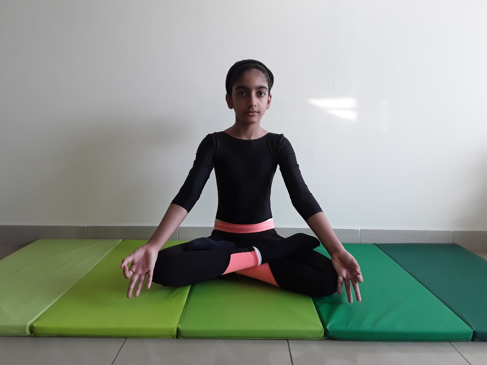

LOTUS POSE

Steps to perform Lotus Pose
- Sit on the floor with your legs straight in front. Bend your right knee and bring the lower leg up into a cradle: The outer edge of the foot is notched into the crook of the left elbow, the knee is wedged into the crook of the right elbow, and the hands are clasped (if possible) outside the shin.
- Bend the left knee and turn the leg out. Rock your right leg far out to the right, then lock the knee tight by pressing the back of the thigh to the calf. Next swing the leg across in front of your torso, swiveling from the hip and not the knee, and nestle the outside edge of the foot into the inner left groin.
- Now lean back slightly, pick the right leg up off the floor, and lift the left leg in front of the right. To do this hold the underside of the left shin in your hands. Carefully slide the left leg over the right, snuggling the edge of the left foot deep into the right groin.